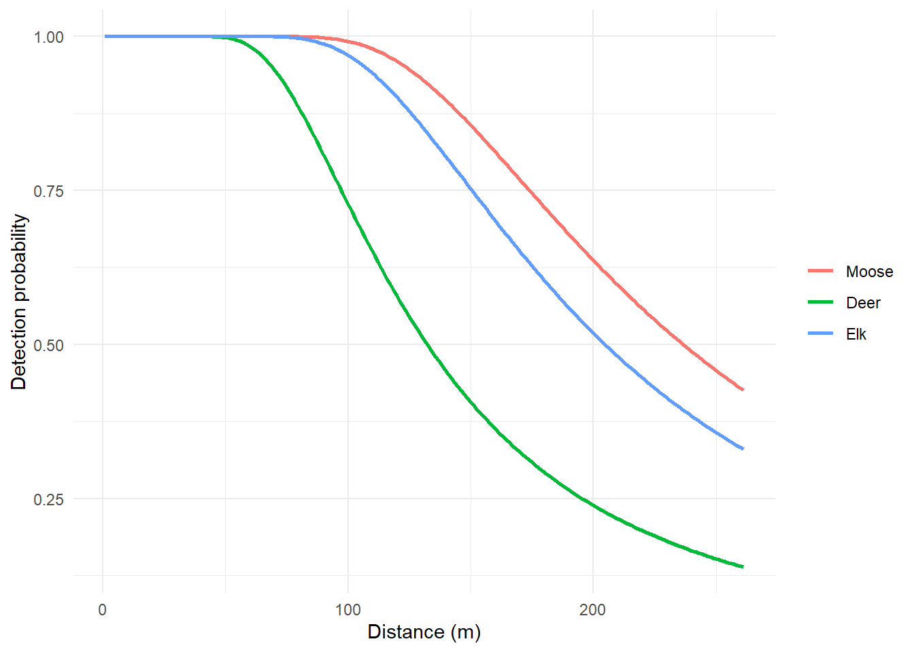
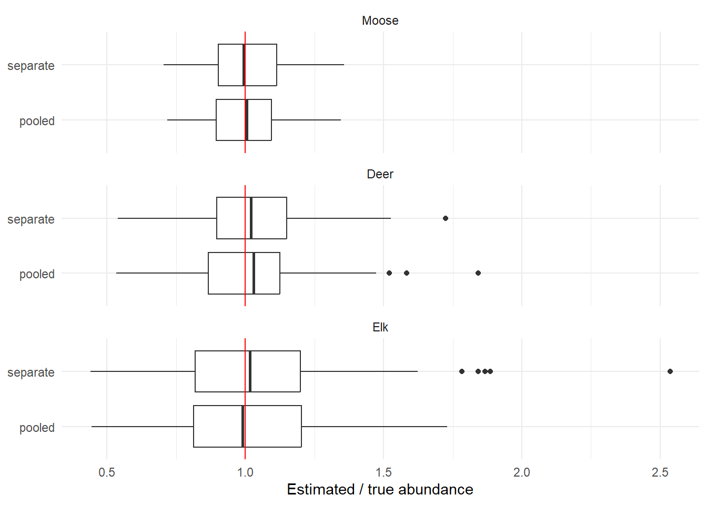

library(here)
library(dsims)
library(Distance)
library(terra)
library(ggplot2)
library(parallel)Simulating a multi-species survey
Introduction
The RMNP survey recorded moose, deer, elk, bison and wolves on the same flights. The analysis used one detection function for all species, with species as a covariate (Marques et al. 2007). Pooling lets species with few sightings borrow information about the shape of the detection function from the others. Species still differ in how far away they can be seen, and canopy cover affects all of them.
dsims simulates one population at a time. There is no multi-species simulation, but its building blocks can be combined into one:
- generate one population per species, each with its own density surface, group size and detectability;
- combine them into a single population and survey it with one set of transects;
- analyse the simulated survey as we analysed the real one: fit the pooled detection function, then estimate abundance by species.
Repeating these steps many times shows how well a design estimates each species. Here we simulate the segmented grid design for moose, deer and elk, and compare the pooled analysis with a separate detection function per species.
Prerequisites
The simulation needs the fork of dsims for the canopy covariate (see Packages):
remotes::install_github(c("hambrecht/dssd", "hambrecht/dsims"))We load the region, populations and detection function parameters from From density surface model to simulation, and the segmented grid design from Survey designs with subplots.
list2env(readRDS(here("workflow", "outputs", "simulation_setup.rds")), envir = environment())<environment: R_GlobalEnv>design_seg <- readRDS(here("workflow", "outputs", "simulation_designs.rds"))$design_segSpecies populations and detectability
The three populations were set up in From density surface model to simulation: each has the density surface of its DSM, and groups with the observed mean group size.
data.frame(animals = round(N_animals), mean_group_size = round(group_size, 2),
groups = sapply(pop_descs, function(p) p@N)) animals mean_group_size groups
Moose 458 1.52 301
Deer 545 1.59 342
Elk 230 2.67 86Each species gets its own detectability, from the pooled detection function of the RMNP analysis. The hazard-rate shape and the canopy coefficient are shared; the scale differs by species. As in Simulating spatially varying detectability, canopy cover enters through the lidar raster.
lidar <- rast(here("data", "RMNP", "lidar", "lidar_pabove2_zmax_10m.tif"))
canopy_file <- here("workflow", "outputs", "pabove2_10m.tif")
writeRaster(lidar[[1]], canopy_file, overwrite = TRUE, names = "pabove2")
detects <- lapply(SIM_SPECIES, function(s) {
make.detectability(key.function = "hr", scale.param = scale_species[[s]], shape.param = shape,
cov.param = list(pabove2 = beta_pabove2),
cov.surface = list(pabove2 = canopy_file), truncation = TRUNCATION_M)
})
names(detects) <- SIM_SPECIESg_hr <- function(x, sigma, b) 1 - exp(-(x / sigma)^(-b))
z <- median(values(lidar[[1]]), na.rm = TRUE)
curves <- expand.grid(distance = seq(1, TRUNCATION_M, length.out = 200), species = SIM_SPECIES)
curves$p <- g_hr(curves$distance, scale_species[as.character(curves$species)] * exp(beta_pabove2 * z), shape)
ggplot(curves, aes(distance, p, colour = species)) +
geom_line(linewidth = 1) +
labs(x = "Distance (m)", y = "Detection probability", colour = NULL) +
theme_minimal()
One multi-species survey
survey_once() carries out the three steps for one repetition. generate.population() places each species’ groups and computes each group’s detection scale from its species and the canopy at its location. We add a Species column and stack the three populations. run.survey() then surveys the combined population with one set of transects: a Survey.LT object built directly from the population and the transects.
survey_once <- function() {
transects <- generate.transects(design_seg)
pops <- lapply(SIM_SPECIES, function(s) {
p <- suppressWarnings(generate.population(pop_descs[[s]], detects[[s]], region))
p@population$Species <- s
p
})
pop <- pops[[1]]
pop@population <- do.call(rbind, lapply(pops, function(p) p@population))
pop@population$individual <- seq_len(nrow(pop@population))
pop@N <- sum(sapply(pops, function(p) p@N))
survey <- new("Survey.LT", population = pop, transect = transects, perp.truncation = TRUNCATION_M)
data <- run.survey(survey, region)@dist.data
data$Effort <- as.numeric(data$Effort) # plain numbers for Distance
data$Area <- as.numeric(data$Area)
truth <- sapply(pops, function(p) sum(p@population$size))
list(data = data, truth = setNames(truth, SIM_SPECIES))
}
set.seed(2025)
one <- survey_once()
one$truthMoose Deer Elk
467 559 232 table(one$data$Species)
Deer Elk Moose
79 31 78 The survey data contain one row per detected group, with its distance, group size, species and canopy cover, and one row for each transect without detections. This is the “flat file” format that Distance uses.
Analysing the survey
The pooled analysis follows the RMNP analysis: one hazard-rate detection function with species and canopy cover, and abundance by species with dht2(). stratification = "object" tells dht2() that species is a property of the detected groups rather than of the area, so each species gets its own estimate from the same transects.
analyse_pooled <- function(data) {
data$Species <- factor(data$Species, levels = SIM_SPECIES)
fit <- ds(data[!is.na(data$distance), ], truncation = TRUNCATION_M, key = "hr",
formula = ~Species + pabove2, adjustment = NULL, quiet = TRUE)
est <- dht2(fit, flatfile = data, strat_formula = ~Species,
stratification = "object", convert_units = 1)
est <- as.data.frame(est)[match(SIM_SPECIES, est$Species), ]
data.frame(species = SIM_SPECIES, N = est$Abundance, cv = est$Abundance_CV,
lcl = est$LCI, ucl = est$UCI)
}
analyse_pooled(one$data)Fitting hazard-rate key functionAIC= 2062.076 species N cv lcl ucl
1 Moose 400.1749 0.1741160 284.9772 561.9396
2 Deer 708.3020 0.2042664 476.0685 1053.8227
3 Elk 229.0746 0.2881275 131.4884 399.0859For comparison, analyse_separate() fits a detection function to each species on its own, as if the species had been surveyed separately. It keeps that species’ detections and one empty row for every transect on which it was not seen, and fits a hazard-rate model without covariates.
analyse_separate <- function(data) {
do.call(rbind, lapply(SIM_SPECIES, function(s) {
own <- data[!is.na(data$Species) & data$Species == s, ]
empty <- data[match(setdiff(unique(data$Sample.Label), own$Sample.Label), data$Sample.Label), ]
empty[, c("object", "distance", "size", "Species", "pabove2")] <- NA
flat <- rbind(own, empty)
est <- tryCatch({
fit <- ds(own, truncation = TRUNCATION_M, key = "hr", adjustment = NULL, quiet = TRUE)
as.data.frame(dht2(fit, flatfile = flat, strat_formula = ~1, convert_units = 1))
}, error = function(e) NULL)
if (is.null(est)) return(data.frame(species = s, N = NA, cv = NA, lcl = NA, ucl = NA))
data.frame(species = s, N = est$Abundance, cv = est$Abundance_CV, lcl = est$LCI, ucl = est$UCI)
}))
}
analyse_separate(one$data)Fitting hazard-rate key functionAIC= 869.845Fitting hazard-rate key functionAIC= 856.958Fitting hazard-rate key functionAIC= 346.429 species N cv lcl ucl
1 Moose 362.6747 0.1642869 263.1026 499.9303
2 Deer 778.0058 0.2590363 470.1614 1287.4155
3 Elk 240.2399 0.2126533 158.7805 363.4907Running the simulation
Each repetition takes about 20 seconds, most of it fitting detection functions, so we run the repetitions in parallel with the parallel package. On Linux and macOS the workers are forked from the running session (see Running simulations on Linux); on Windows they are separate R sessions, so clusterEvalQ() and clusterExport() load the packages and copy the objects they need. clusterSetRNGStream() gives every worker its own reproducible stream of random numbers.
REPS <- 100
one_rep <- function(i) {
s <- survey_once()
rbind(cbind(analysis = "pooled", analyse_pooled(s$data), truth = s$truth),
cbind(analysis = "separate", analyse_separate(s$data), truth = s$truth))
}
# Forked workers on Linux and macOS share the session; Windows needs sockets
cl <- makeCluster(min(detectCores() - 1, 20),
type = if (.Platform$OS.type == "unix") "FORK" else "PSOCK")
clusterSetRNGStream(cl, 2025)
invisible(clusterEvalQ(cl, { library(dsims); library(Distance) }))
clusterExport(cl, c("survey_once", "analyse_pooled", "analyse_separate", "design_seg",
"pop_descs", "detects", "region", "SIM_SPECIES", "TRUNCATION_M"))
reps <- parLapply(cl, seq_len(REPS), one_rep)
stopCluster(cl)
reps <- do.call(rbind, Map(cbind, rep = seq_len(REPS), reps))Results
For each species and analysis we compare the estimates with the true abundance of the repetition. Group sizes are random, so the true number of animals varies a little between repetitions.
reps$error <- reps$N - reps$truth
results <- do.call(rbind, lapply(split(reps, list(reps$species, reps$analysis)), function(r) {
data.frame(species = r$species[1], analysis = r$analysis[1],
true_N = mean(r$truth), mean_N = mean(r$N, na.rm = TRUE),
bias_pct = 100 * mean(r$error / r$truth, na.rm = TRUE),
rrmse = sqrt(mean(r$error^2, na.rm = TRUE)) / mean(r$truth),
ci_coverage = mean(r$lcl <= r$truth & r$truth <= r$ucl, na.rm = TRUE),
mean_cv = mean(r$cv, na.rm = TRUE), failed = sum(is.na(r$N)))
}))
results$species <- factor(results$species, levels = SIM_SPECIES)
results <- results[order(results$species, results$analysis), ]
rownames(results) <- NULL
knitr::kable(results, digits = 3)| species | analysis | true_N | mean_N | bias_pct | rrmse | ci_coverage | mean_cv | failed |
|---|---|---|---|---|---|---|---|---|
| Moose | pooled | 455.17 | 459.443 | 0.924 | 0.143 | 0.97 | 0.145 | 0 |
| Moose | separate | 455.17 | 458.962 | 0.811 | 0.148 | 0.96 | 0.158 | 0 |
| Deer | pooled | 545.81 | 560.400 | 2.648 | 0.220 | 0.94 | 0.187 | 0 |
| Deer | separate | 545.81 | 562.155 | 3.006 | 0.205 | 0.95 | 0.198 | 0 |
| Elk | pooled | 228.29 | 230.947 | 1.329 | 0.285 | 0.95 | 0.296 | 0 |
| Elk | separate | 228.29 | 238.792 | 4.846 | 0.321 | 0.98 | 0.334 | 0 |
reps$species <- factor(reps$species, levels = SIM_SPECIES)
ggplot(reps, aes(N / truth, analysis)) +
geom_boxplot() +
geom_vline(xintercept = 1, colour = "red") +
facet_wrap(~species, ncol = 1) +
labs(x = "Estimated / true abundance", y = NULL) +
theme_minimal()
pooled <- results[results$analysis == "pooled", ]
separate <- results[results$analysis == "separate", ]- Pooled analysis. The pooled detection function estimates all three species with a bias between 0.9% and 2.6%. Its RRMSE ranges from 0.14 to 0.29.
- Separate analyses. With a detection function per species, the RRMSE ranges from 0.15 to 0.32. For moose and deer the two analyses perform similarly. Pooling helps most for elk, the species with the fewest detections, whose separate model has only its own sightings to estimate the shape of the detection function from: RRMSE 0.29 pooled against 0.32 separate, and bias 1.3% against 4.8%.
- Confidence intervals. Coverage ranges from 0.94 to 0.98. With 100 repetitions, coverage has a Monte Carlo standard error of about 0.02.
Discussion
A multi-species simulation reproduces the logic of the real analysis. All species are detected on the same transects, and the pooled detection function borrows strength across species while keeping their differences in detectability. This makes it possible to check a design for every species of interest at once, including those seen too rarely to plan for on their own. It can also show which species limits the precision of a proposed design.
Two simplifications are worth noting. The species are simulated independently, so the simulation ignores any tendency of species to occur together or to avoid each other. Elk also have an intercept-only DSM, so their simulated groups are spread evenly over the park rather than following their habitat.
References
Marques, Tiago A., Len Thomas, Steven G. Fancy, and Stephen T. Buckland. 2007. “Improving Estimates of Bird Density Using Multiple-Covariate Distance Sampling.” The Auk 124 (4): 1229–43. https://doi.org/10.1642/0004-8038(2007)124[1229:IEOBDU]2.0.CO;2.